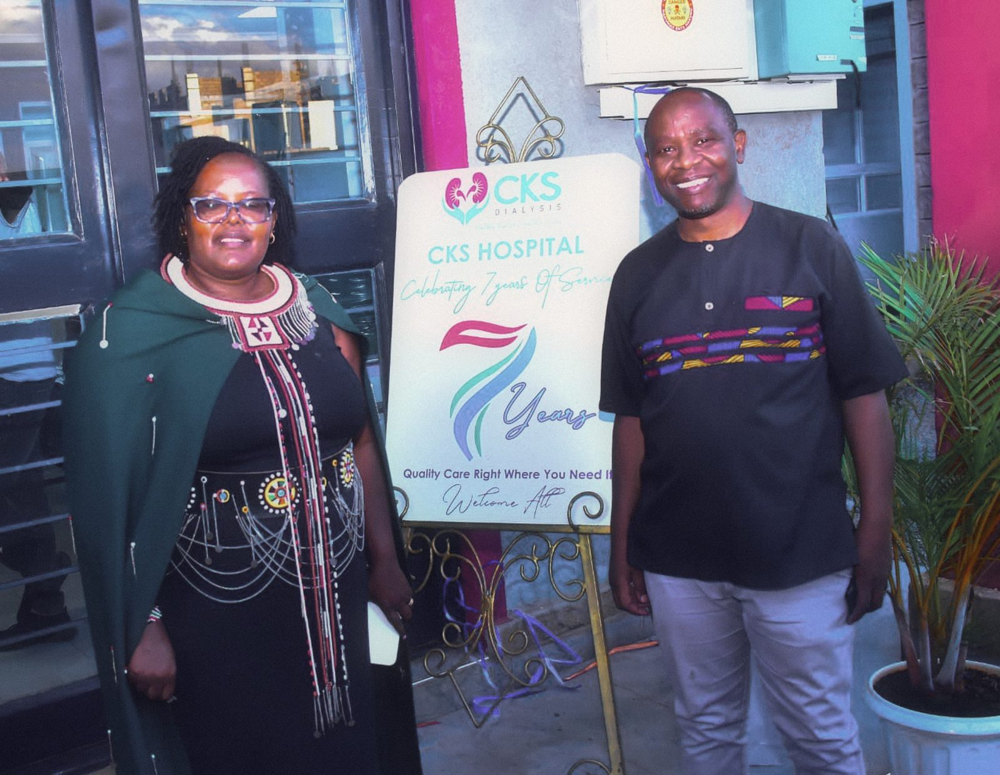
Nephrologist-led
Every plan is overseen by Dr. Jonathan Wala, nephrologist and President of the Kenya Renal Association.
Meet our leadershipNephrologist-led haemodialysis at four CKS branches, in an electric recliner with breakfast, lunch and Wi-Fi included. Our hospital in Kimuka never closes.
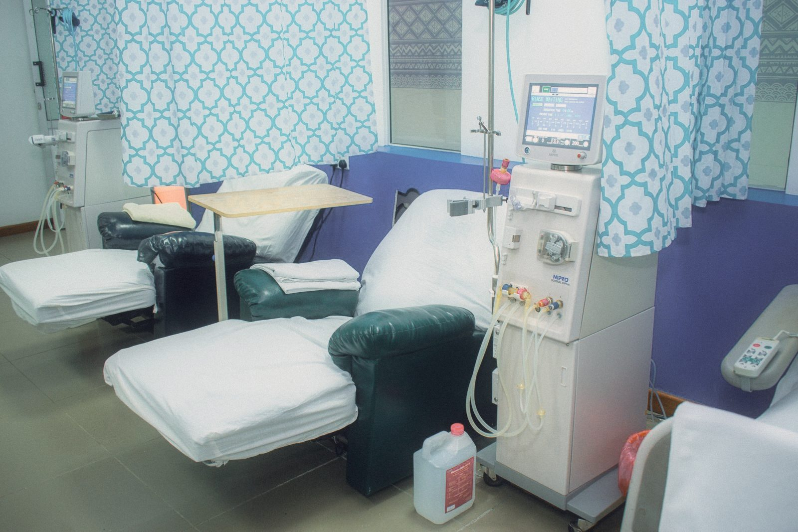
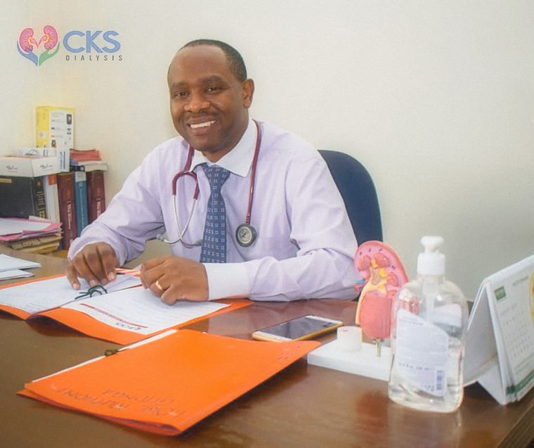
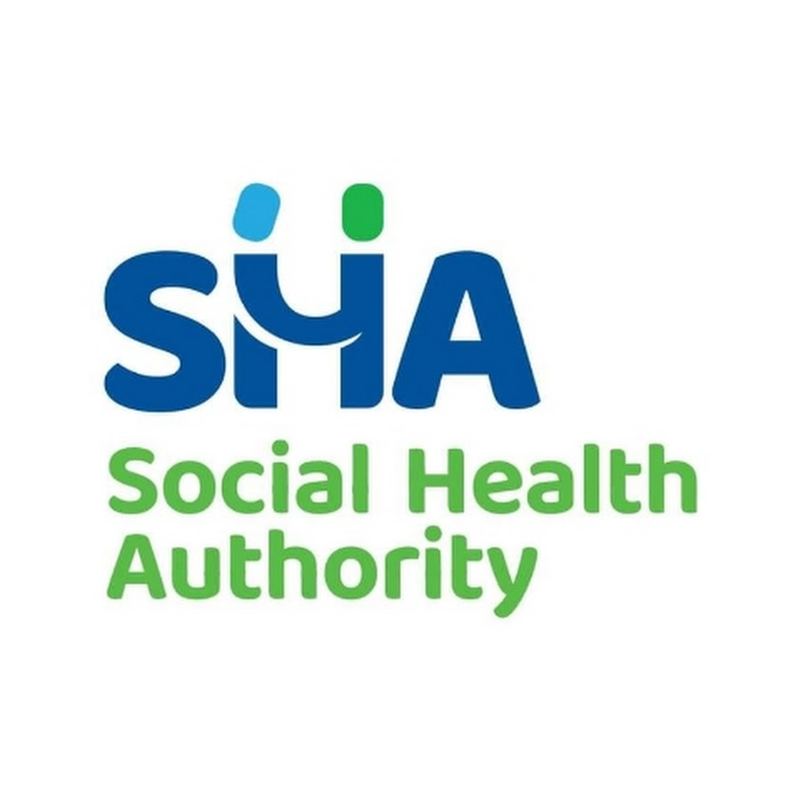
SHA accreditedPlus major private insurersDr. Jonathan Wala, President of the Kenya Renal Association
Weekly review of your labs and prescription
Every plan is overseen by Dr. Jonathan Wala, nephrologist and President of the Kenya Renal Association.
Meet our leadership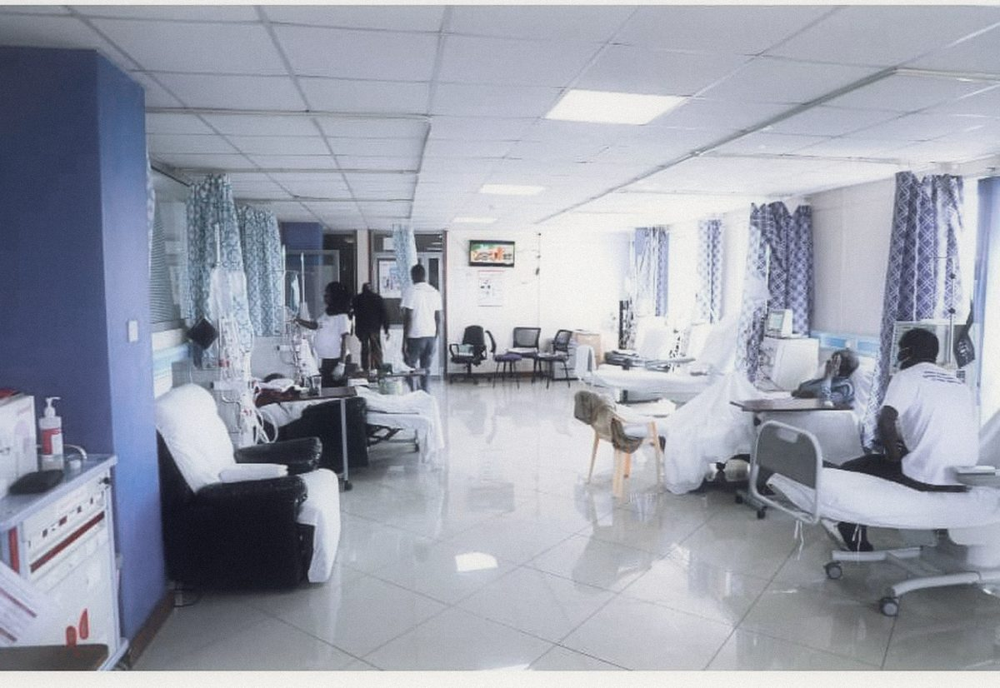
Four hours, twice a week, in an electric recliner. Breakfast, lunch, Wi-Fi and TV are on us.
What a session includes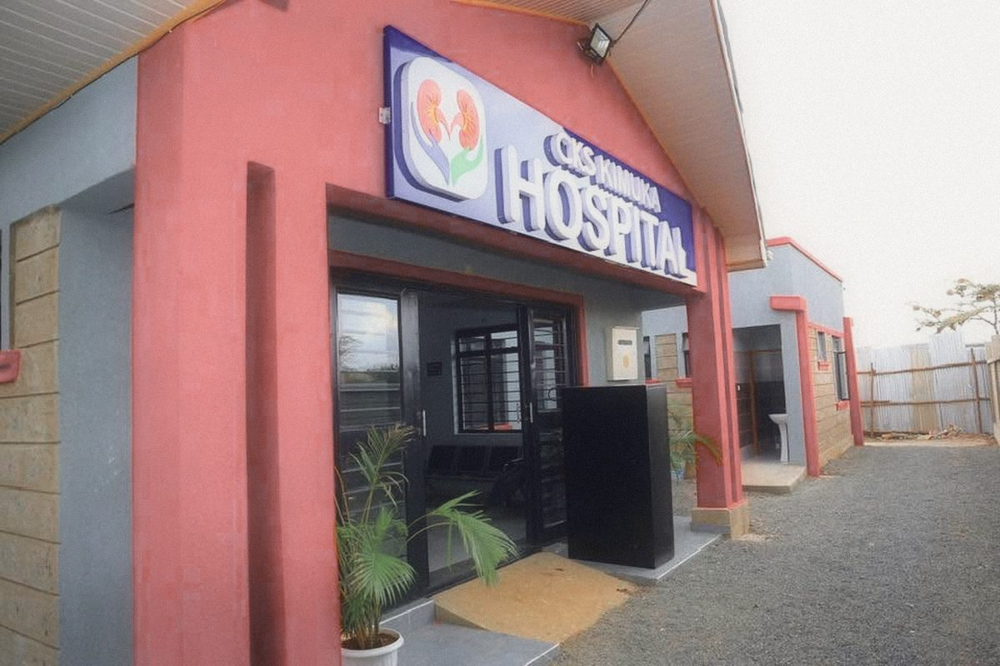
CKS Hospital Kimuka never closes: dialysis, emergency, maternity, lab and imaging on Ngong-Suswa Road.
Visit Kimuka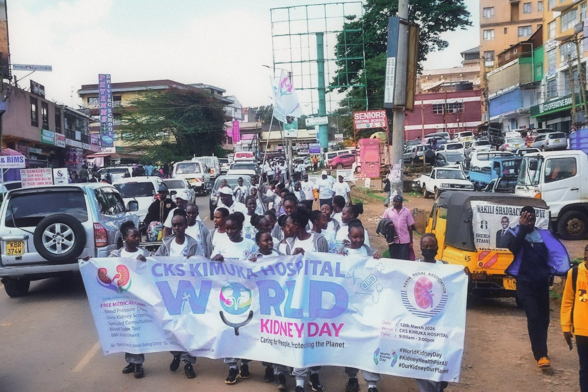
On World Kidney Day 2025 we marched through Ngong Town and screened our neighbours for free.
See the day in photosFrom your first kidney function test to dialysis and transplant work-up, every step is run by one renal team and reviewed by our nephrologist.
Modern computerised machines, renal nurses who know your name, and a prescription Dr. Wala reviews every week against your labs.
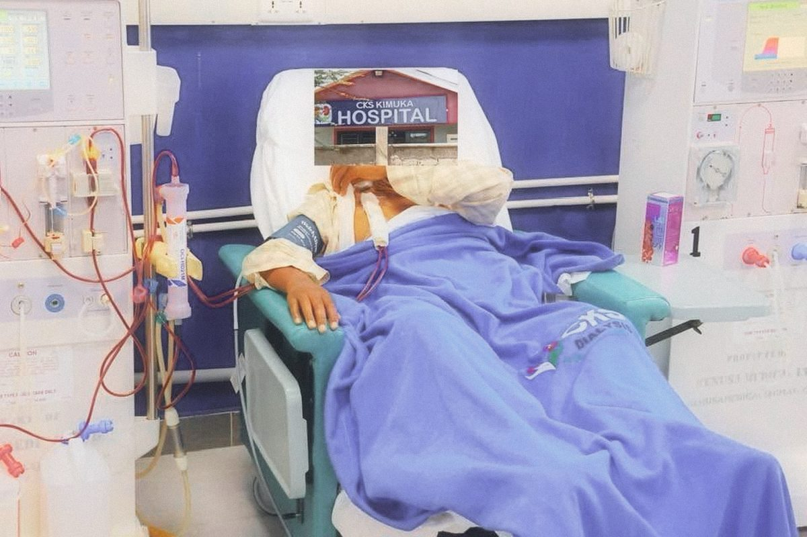
Pre-transplant evaluation and follow-up, coordinated with Aga Khan University Hospital and MP Shah Hospital.
Ask about transplantOne-on-one consultations with Dr. Wala for CKD management, diet counselling and medication reviews.
Book a consultationCreatinine, urea, electrolytes and GFR every month, so treatment follows your numbers.
Safe insertion, care and removal of dialysis catheters, and fistula care under strict infection control.
Image-guided diagnostic biopsies to pinpoint the cause of kidney disease and guide treatment.
A nutritionist helps you manage fluid, potassium and phosphorus between sessions, without guesswork.
Lab, ultrasound, ECG and imaging around the clock, with most results within 24 hours. Kidney disease, diabetes and hypertension are easiest to treat when caught early.
Starting dialysis is a big change. Here is exactly what happens, and what to bring so your first day is calm.
A doctor or nephrologist assesses you and recommends dialysis. No referral yet? Book a consultation with Dr. Wala.
A surgeon creates access to your bloodstream: an AV fistula (the gold standard), an AV graft, or a temporary catheter for urgent cases.
Choose a branch and two weekly sessions. We confirm on WhatsApp or by phone. A request is not booked until we confirm it.
Four hours in an electric recliner, with breakfast, lunch, TV and Wi-Fi. Your nurse checks on you throughout.
All documents must be less than 4 weeks old, from a recognised hospital or laboratory.
You're ready. Bring these on your first day and we'll take it from there.
Choose the branch nearest you. Opening hours update live, in Nairobi time.
CKS Group of Hospitals set out to give kidney patients world-class, affordable dialysis close to home. Our vision: better survival and quality of life for every patient.
Nephrologist and President of the Kenya Renal Association. Co-founder of CKS Group of Hospitals and the clinical lead behind its growth in renal care.
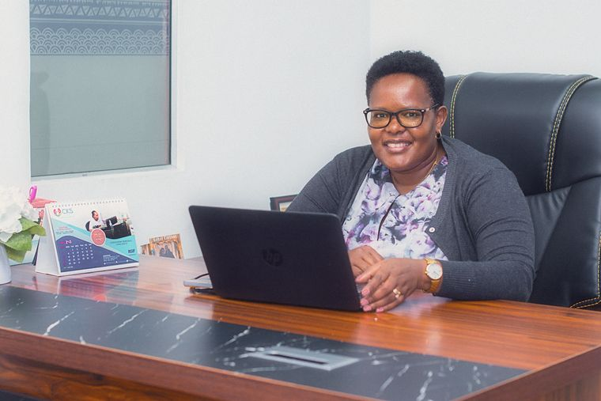
Healthcare administrator and co-founder of CKS Group of Hospitals. She leads strategy, operations and expansion across Kenya.
"The nurses at CKS Pangani are incredibly caring. They remember my name, check on my comfort throughout each session, and the meals are a lovely touch."
"Dr. Wala took time to explain everything about my kidney condition. I finally felt understood. The Buruburu centre is clean and peaceful."
"SHA covers most of my dialysis costs here. CKS made the insurance process seamless, with no stress for me or my family."
"Comfortable electric recliner chairs made my 4-hour sessions so much more bearable. The TV entertainment helps the time fly by."
"My father has been coming here for 2 years. The team treats him with so much dignity. We are grateful for CKS Dialysis."
"Having a branch so close to Aga Khan Hospital means my specialist referrals are fast. Highly recommended."
"Free Wi-Fi during sessions means I catch up on work without missing a beat. The staff are professional and the facility is spotless."
The people, places and days that make CKS what it is. Open the full gallery
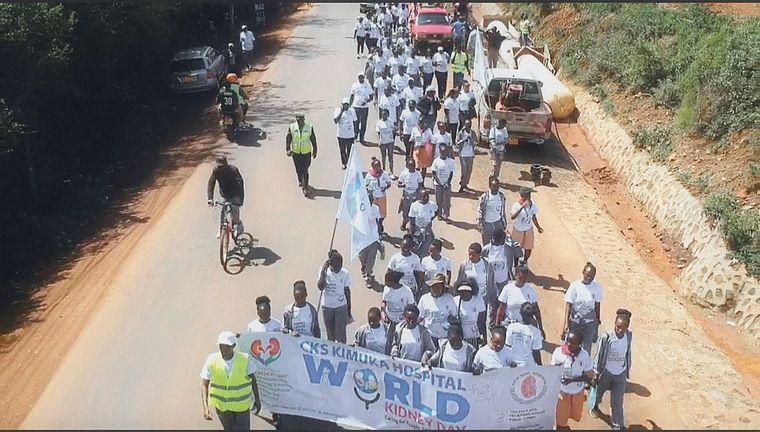
Staff, patients and neighbours walked for kidney health, with free screening along the way.
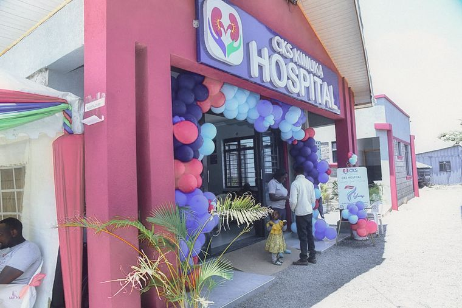
We celebrated our Kimuka hospital the best way we know: screening the community for free.
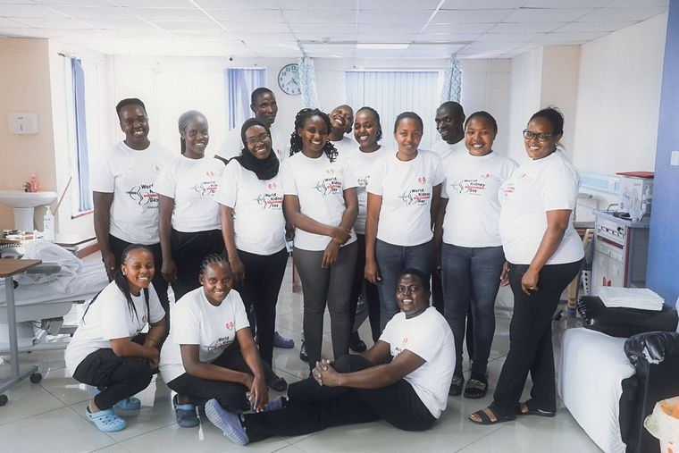
Renal nurses, lab scientists, sonographers and technicians who keep every session safe.
SHA covers two haemodialysis sessions a week for eligible patients. CIC is accepted too.
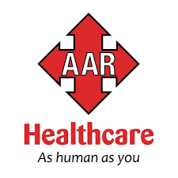
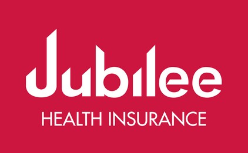
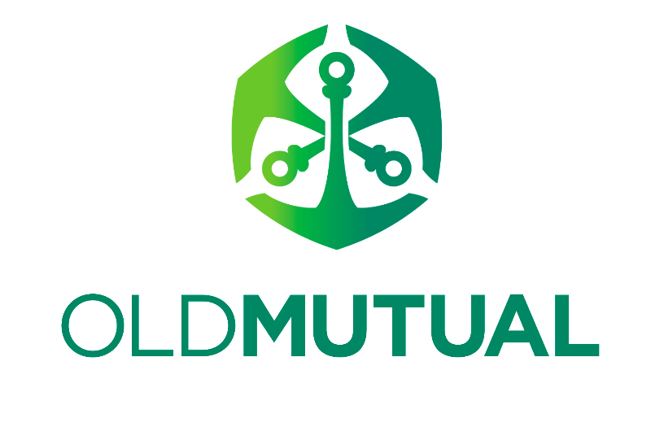
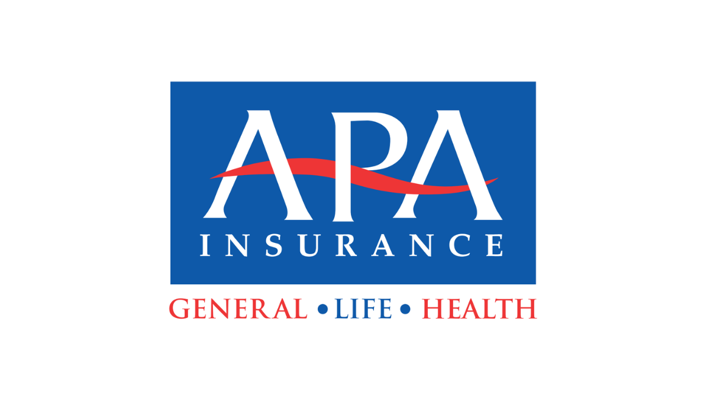
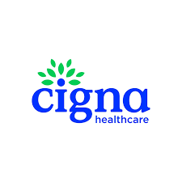
Can't find your answer? Our renal team is happy to talk it through, day or night at Kimuka.
Call 0753 372 814Tell us what you need and which branch suits you. Your request goes straight to that branch on WhatsApp, and we reply to confirm your slot.
Our renal team will answer your questions, check your documents and find a branch and time that fit your week.
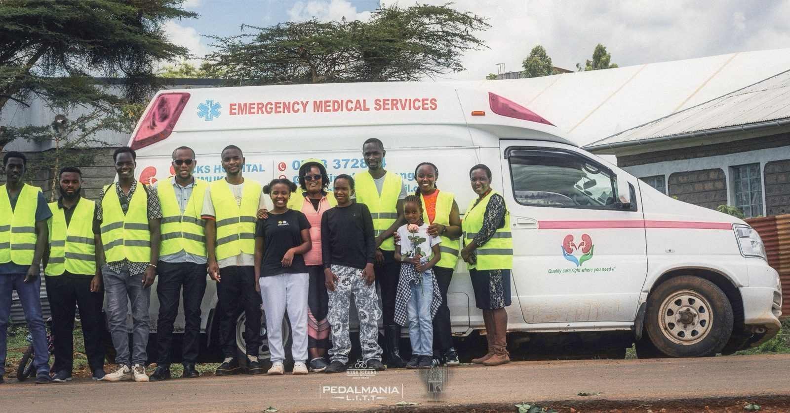